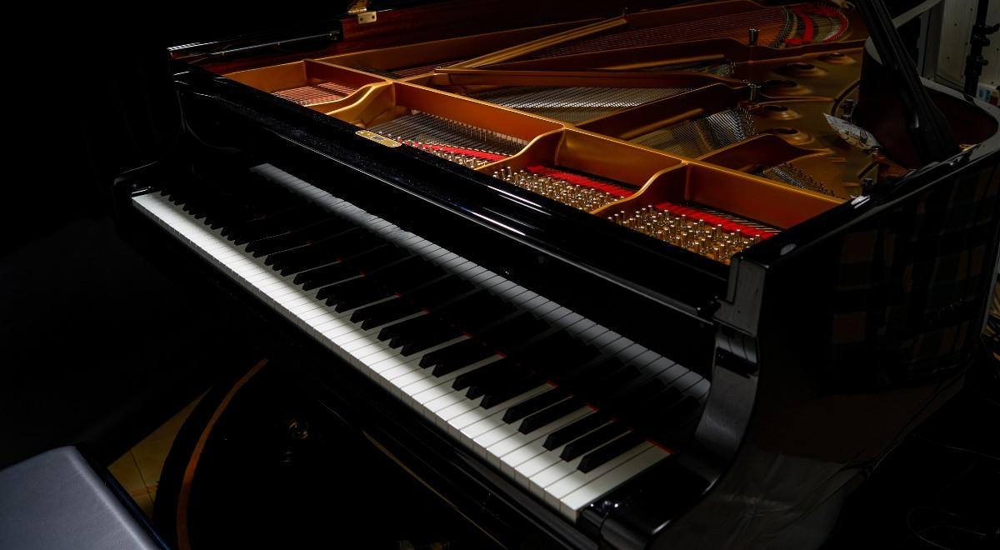
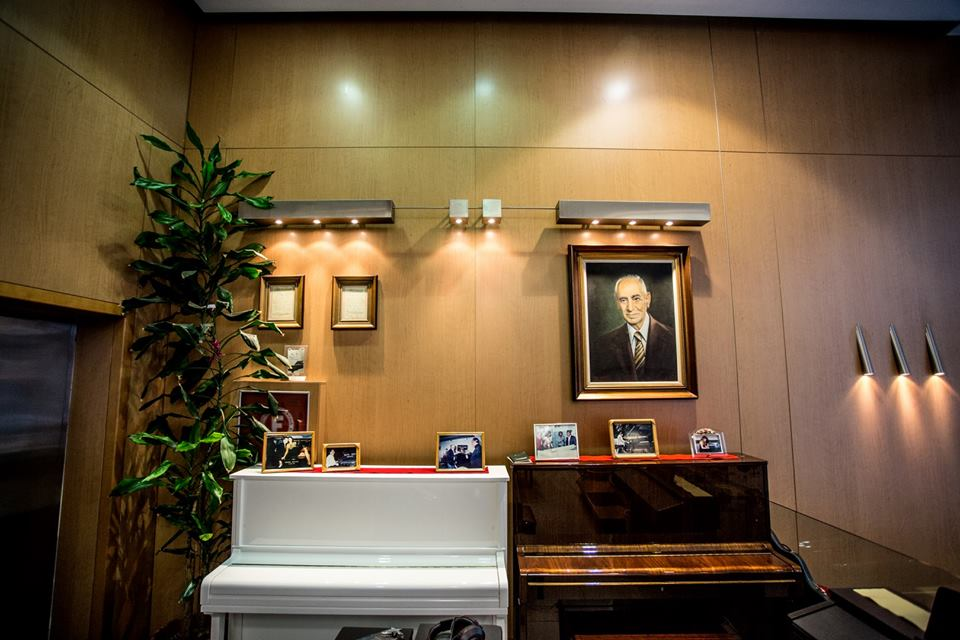
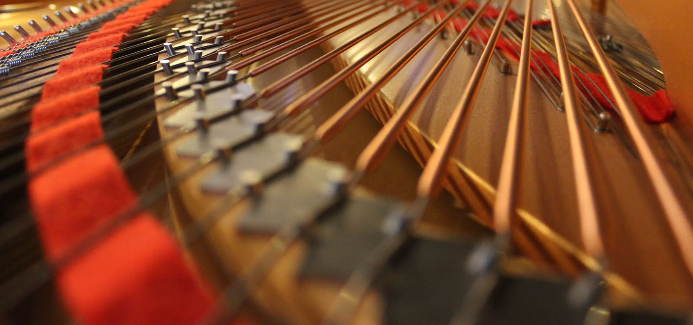
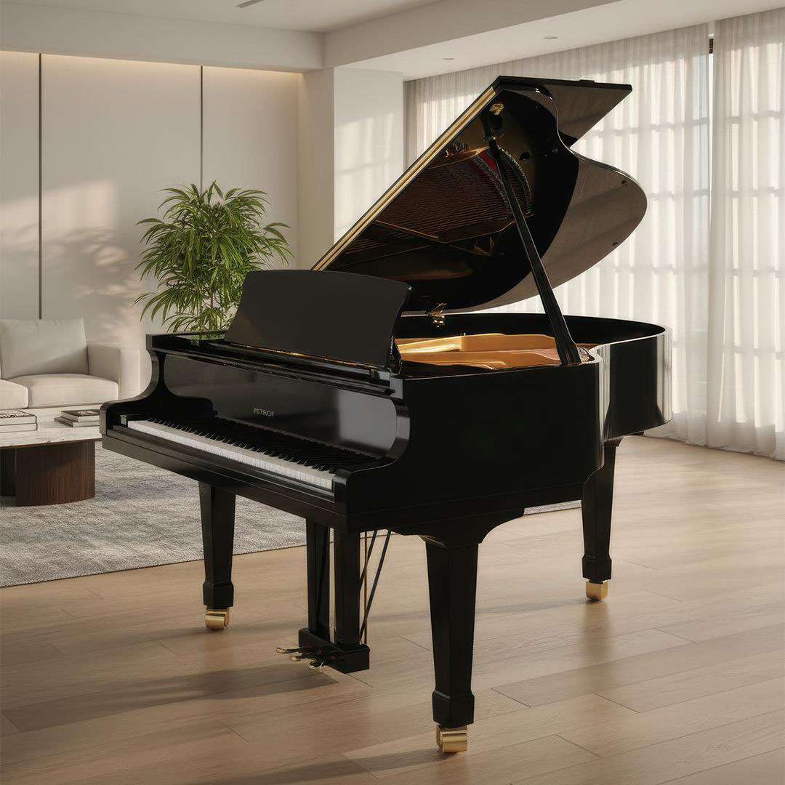
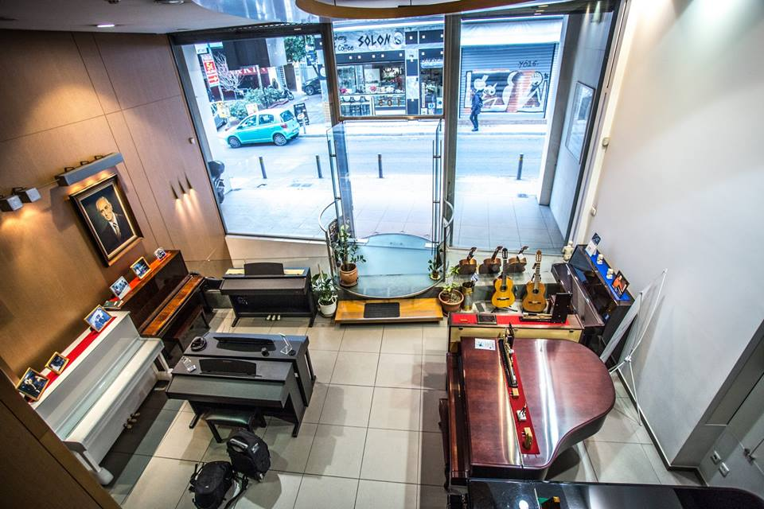
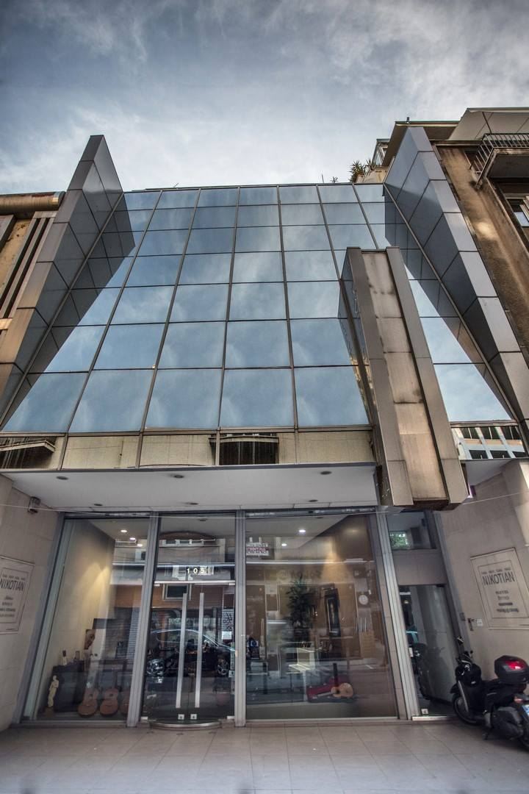

Nikotian Music House · Since 1929
A life devoted to the piano.
A family story of almost a century, with the piano always at its heart. With knowledge, care and love for every instrument.
The House
A story that continues
Nikotian began in Athens in 1929 and has stayed in the same family ever since.
Each generation hands on to the next what it knows about the piano: how it sounds, how it is made, how it keeps its voice over the years.
This knowledge is still alive today, passed from generation to generation and shaping the House’s relationship with every piano.

- 1929 The beginning Carlo Nikotian founds the House at 63 Akadimias Street.
- 1978 A major partnership The partnership with the piano maker Young Chang begins.
- 2000–2008 The next generation Karolos and Robert gradually join the House.
- Today The story continues The Nikotian showroom is at 105 Solonos Street, Athens.

Expertise
The knowledge behind every piano
A piano isn’t finished the day it arrives in your home. It changes with time, humidity and use. That is why we keep caring for it afterwards.
-
Tuning & maintenance
Regular care, so that the piano keeps its sound.
-
Repairs & technical care
Repairs and regulation of the action.
-
Rental, transport & appraisal
Piano rental, transport and appraisal, by arrangement.
A personal choice
The piano that suits you.
Every piano has its own character. The space, your experience and the way you play are just some of the things worth considering before you choose. At Nikotian, the choice begins with personal contact with the instrument.
Hear it. Play it. Feel it.

Our collections
Every piano, a world of its own.
Upright and grand, new and pre-owned. Whichever interests you, you can hear it and play it at the showroom.
We also have electric pianos
Another musical voice
Classical guitars
Alongside the pianos, a small selection of Juan Hernandez and Azahar classical guitars.
See the guitarsThe showroom
Music, up close.
Choosing a piano is an experience worth having in person. At the Nikotian showroom, every instrument can be heard, tried and discovered at your own pace.
- Address
- 105 Solonos Street,
106 78 Athens - Landline
- 210 380 8836
- info@nikotian.gr
- Mobile
- 697 203 4883

